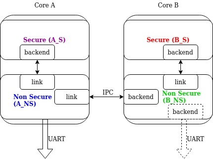
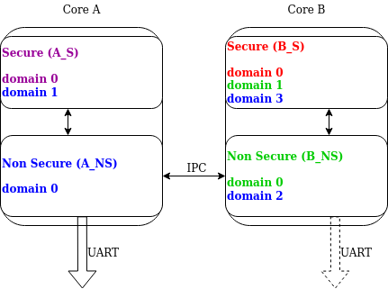

Logging
The logging API provides a common interface to process messages issued by developers. Messages are passed through a frontend and are then processed by active backends. Custom frontend and backends can be used if needed.
Summary of the logging features:
Deferred logging reduces the time needed to log a message by shifting time consuming operations to a known context instead of processing and sending the log message when called.
Multiple backends supported (up to 9 backends).
Custom frontend support. It can work together with backends.
Compile time filtering on module level.
Run time filtering independent for each backend.
Additional run time filtering on module instance level.
Timestamping with user provided function. Timestamp can have 32 or 64 bits.
Dedicated API for dumping data.
Dedicated API for handling transient strings.
Panic support - in panic mode logging switches to blocking, synchronous processing.
Printk support - printk message can be redirected to the logging.
Design ready for multi-domain/multi-processor system.
Support for logging floating point variables and long long arguments.
Built-in copying of transient strings used as arguments.
Support for multi-domain logging.
Rate-limited logging macros to prevent log flooding when messages are generated frequently.
Logging API is highly configurable at compile time as well as at run time. Using Kconfig options (see Global Kconfig Options) logs can be gradually removed from compilation to reduce image size and execution time when logs are not needed. During compilation logs can be filtered out on module basis and severity level.
Logs can also be compiled in but filtered on run time using dedicate API. Run time filtering is independent for each backend and each source of log messages. Source of log messages can be a module or specific instance of the module.
There are four severity levels available in the system: error, warning, info and debug. For each severity level the logging API (include/zephyr/logging/log.h) has set of dedicated macros. Logger API also has macros for logging data.
For each level the following set of macros are available:
LOG_Xfor standard printf-like messages, e.g.LOG_ERR.LOG_HEXDUMP_Xfor dumping data, e.g.LOG_HEXDUMP_WRN.LOG_INST_Xfor standard printf-like message associated with the particular instance, e.g.LOG_INST_INF.LOG_INST_HEXDUMP_Xfor dumping data associated with the particular instance, e.g.LOG_INST_HEXDUMP_DBG
The warning level also exposes the following additional macro:
LOG_WRN_ONCEfor warnings where only the first occurrence is of interest.
Rate-limited logging macros are also available for all severity levels to prevent log flooding:
LOG_X_RATELIMITfor rate-limited standard printf-like messages using default rate, e.g.LOG_ERR_RATELIMIT.LOG_X_RATELIMIT_RATEfor rate-limited standard printf-like messages with custom rate, e.g.LOG_ERR_RATELIMIT_RATE.LOG_HEXDUMP_X_RATELIMITfor rate-limited data dumping using default rate, e.g.LOG_HEXDUMP_WRN_RATELIMIT.LOG_HEXDUMP_X_RATELIMIT_RATEfor rate-limited data dumping with custom rate, e.g.LOG_HEXDUMP_WRN_RATELIMIT_RATE.
The convenience macros use the default rate specified by CONFIG_LOG_RATELIMIT_INTERVAL_MS,
while the explicit rate macros take a rate parameter (in milliseconds) that specifies the minimum interval between log messages.
There are two configuration categories: configurations per module and global
configuration. When logging is enabled globally, it works for modules. However,
modules can disable logging locally. Every module can specify its own logging
level. The module must define the LOG_LEVEL macro before using the
API. Unless a global override is set, the module logging level will be honored.
The global override can only increase the logging level. It cannot be used to
lower module logging levels that were previously set higher. It is also possible
to globally limit logs by providing maximal severity level present in the
system, where maximal means lowest severity (e.g. if maximal level in the system
is set to info, it means that errors, warnings and info levels are present but
debug messages are excluded).
Each module which is using the logging must specify its unique name and register itself to the logging. If module consists of more than one file, registration is performed in one file but each file must define a module name.
Logger’s default frontend is designed to be thread safe and minimizes time needed to log the message. Time consuming operations like string formatting or access to the transport are not performed by default when logging API is called. When logging API is called a message is created and added to the list. Dedicated, configurable buffer for pool of log messages is used. There are 2 types of messages: standard and hexdump. Each message contain source ID (module or instance ID and domain ID which might be used for multiprocessor systems), timestamp and severity level. Standard message contains pointer to the string and arguments. Hexdump message contains copied data and string.
Global Kconfig Options
These options can be found in the following path subsys/logging/Kconfig.
CONFIG_LOG: Global switch, turns on/off the logging.
Mode of operations:
CONFIG_LOG_MODE_DEFERRED: Deferred mode.
CONFIG_LOG_MODE_IMMEDIATE: Immediate (synchronous) mode.
CONFIG_LOG_MODE_MINIMAL: Minimal footprint mode.
Filtering options:
CONFIG_LOG_RUNTIME_FILTERING: Enables runtime reconfiguration of the
filtering.
CONFIG_LOG_DEFAULT_LEVEL: Default level, sets the logging level
used by modules that are not setting their own logging level.
CONFIG_LOG_OVERRIDE_LEVEL: It overrides module logging level when
it is not set or set lower than the override value.
CONFIG_LOG_MAX_LEVEL: Maximal (lowest severity) level which is
compiled in.
Processing options:
CONFIG_LOG_MODE_OVERFLOW: When new message cannot be allocated,
oldest one are discarded.
CONFIG_LOG_BLOCK_IN_THREAD: If enabled and new log message cannot
be allocated thread context will block for up to
CONFIG_LOG_BLOCK_IN_THREAD_TIMEOUT_MS or until log message is
allocated.
CONFIG_LOG_PRINTK: Redirect printk calls to the logging.
CONFIG_LOG_PROCESS_TRIGGER_THRESHOLD: When the number of buffered log
messages reaches the threshold, the dedicated thread (see log_thread_set())
is woken up. If CONFIG_LOG_PROCESS_THREAD is enabled then this
threshold is used by the internal thread.
CONFIG_LOG_PROCESS_THREAD: When enabled, logging thread is created
which handles log processing.
CONFIG_LOG_PROCESS_THREAD_STARTUP_DELAY_MS: Delay in milliseconds
after which logging thread is started.
CONFIG_LOG_BUFFER_SIZE: Number of bytes dedicated for the circular
packet buffer.
CONFIG_LOG_FRONTEND: Direct logs to a custom frontend.
CONFIG_LOG_FRONTEND_ONLY: No backends are used when messages goes to frontend.
CONFIG_LOG_FRONTEND_OPT_API: Optional API optimized for the most common
simple messages.
CONFIG_LOG_CUSTOM_HEADER: Injects an application provided header into log.h
CONFIG_LOG_TIMESTAMP_64BIT: 64 bit timestamp.
CONFIG_LOG_SIMPLE_MSG_OPTIMIZE: Optimizes simple log messages for size
and performance. Option available only for 32 bit architectures.
Formatting options:
CONFIG_LOG_FUNC_NAME_PREFIX_ERR: Prepend standard ERROR log messages
with function name. Hexdump messages are not prepended.
CONFIG_LOG_FUNC_NAME_PREFIX_WRN: Prepend standard WARNING log messages
with function name. Hexdump messages are not prepended.
CONFIG_LOG_FUNC_NAME_PREFIX_INF: Prepend standard INFO log messages
with function name. Hexdump messages are not prepended.
CONFIG_LOG_FUNC_NAME_PREFIX_DBG: Prepend standard DEBUG log messages
with function name. Hexdump messages are not prepended.
CONFIG_LOG_BACKEND_SHOW_TIMESTAMP: Enables backend to print timestamps
with log.
CONFIG_LOG_BACKEND_SHOW_LEVEL: Enables backend to print levels with log.
CONFIG_LOG_BACKEND_SHOW_COLOR: Enables coloring of errors (red)
and warnings (yellow).
CONFIG_LOG_BACKEND_FORMAT_TIMESTAMP: If enabled timestamp is
formatted to hh:mm:ss:mmm,uuu. Otherwise is printed in raw format.
Backend options:
CONFIG_LOG_BACKEND_UART: Enable built-in UART backend.
CONFIG_LOG_BACKEND_NET: Enable built-in Networking backend to send syslog messages
to a network server.
Usage
Logging in a module
In order to use logging in the module, a unique name of a module must be
specified and module must be registered using LOG_MODULE_REGISTER.
Optionally, a compile time log level for the module can be specified as the
second parameter. Default log level (CONFIG_LOG_DEFAULT_LEVEL) is used
if custom log level is not provided.
#include <zephyr/logging/log.h>
LOG_MODULE_REGISTER(foo, CONFIG_FOO_LOG_LEVEL);
If the module consists of multiple files, then LOG_MODULE_REGISTER() should
appear in exactly one of them. Each other file should use
LOG_MODULE_DECLARE to declare its membership in the module.
Optionally, a compile time log level for the module can be specified as
the second parameter. Default log level (CONFIG_LOG_DEFAULT_LEVEL)
is used if custom log level is not provided.
#include <zephyr/logging/log.h>
/* In all files comprising the module but one */
LOG_MODULE_DECLARE(foo, CONFIG_FOO_LOG_LEVEL);
In order to use logging API in a function implemented in a header file
LOG_MODULE_DECLARE macro must be used in the function body
before logging API is called. Optionally, a compile time log level for the module
can be specified as the second parameter. Default log level
(CONFIG_LOG_DEFAULT_LEVEL) is used if custom log level is not
provided.
#include <zephyr/logging/log.h>
static inline void foo(void)
{
LOG_MODULE_DECLARE(foo, CONFIG_FOO_LOG_LEVEL);
LOG_INF("foo");
}
Dedicated Kconfig template (subsys/logging/Kconfig.template.log_config) can be used to create local log level configuration.
Example below presents usage of the template. As a result CONFIG_FOO_LOG_LEVEL will be generated:
module = FOO
module-str = foo
source "subsys/logging/Kconfig.template.log_config"
Logging in a module instance
In case of modules which are multi-instance and instances are widely used across the system enabling logs will lead to flooding. The logger provides the tools which can be used to provide filtering on instance level rather than module level. In that case logging can be enabled for particular instance.
In order to use instance level filtering following steps must be performed:
a pointer to specific logging structure is declared in instance structure.
LOG_INSTANCE_PTR_DECLAREis used for that.
#include <zephyr/logging/log_instance.h>
struct foo_object {
LOG_INSTANCE_PTR_DECLARE(log);
uint32_t id;
}
module must provide macro for instantiation. In that macro, logging instance is registered and log instance pointer is initialized in the object structure.
#define FOO_OBJECT_DEFINE(_name) \
LOG_INSTANCE_REGISTER(foo, _name, CONFIG_FOO_LOG_LEVEL) \
struct foo_object _name = { \
LOG_INSTANCE_PTR_INIT(log, foo, _name) \
}
Note that when logging is disabled logging instance and pointer to that instance are not created.
In order to use the instance logging API in a source file, a compile-time log
level must be set using LOG_LEVEL_SET.
LOG_LEVEL_SET(CONFIG_FOO_LOG_LEVEL);
void foo_init(foo_object *f)
{
LOG_INST_INF(f->log, "Initialized.");
}
In order to use the instance logging API in a header file, a compile-time log
level must be set using LOG_LEVEL_SET.
static inline void foo_init(foo_object *f)
{
LOG_LEVEL_SET(CONFIG_FOO_LOG_LEVEL);
LOG_INST_INF(f->log, "Initialized.");
}
Controlling the logging
By default, logging processing in deferred mode is handled internally by the
dedicated task which starts automatically. However, it might not be available
if multithreading is disabled. It can also be disabled by unsetting
CONFIG_LOG_PROCESS_TRIGGER_THRESHOLD. In that case, logging can
be controlled using the API defined in include/zephyr/logging/log_ctrl.h.
Logging must be initialized before it can be used. Optionally, the user can provide
a function which returns the timestamp value. If not provided, k_cycle_get
or k_cycle_get_32 is used for timestamping.
The log_process() function is used to trigger processing of one log
message (if pending), and returns true if there are more messages pending.
However, it is recommended to use macro wrappers (LOG_INIT and
LOG_PROCESS) which handle the case where logging is disabled.
The following snippet shows how logging can be processed in simple forever loop.
#include <zephyr/logging/log_ctrl.h>
int main(void)
{
LOG_INIT();
/* If multithreading is enabled provide thread id to the logging. */
log_thread_set(k_current_get());
while (1) {
if (LOG_PROCESS() == false) {
/* sleep */
}
}
}
If logs are processed from a thread (user or internal) then it is possible to enable
a feature which will wake up processing thread when certain amount of log messages are
buffered (see CONFIG_LOG_PROCESS_TRIGGER_THRESHOLD).
Rate-limited logging
Rate-limited logging macros provide a way to prevent log flooding when messages are
generated frequently. These macros ensure that log messages are not output more
frequently than a specified interval, similar to Linux’s printk_ratelimited
functionality.
The rate-limited logging system provides two types of macros:
Convenience macros (using default rate):
- LOG_ERR_RATELIMIT - Rate-limited error messages
- LOG_WRN_RATELIMIT - Rate-limited warning messages
- LOG_INF_RATELIMIT - Rate-limited info messages
- LOG_DBG_RATELIMIT - Rate-limited debug messages
- LOG_HEXDUMP_ERR_RATELIMIT - Rate-limited error hexdump
- LOG_HEXDUMP_WRN_RATELIMIT - Rate-limited warning hexdump
- LOG_HEXDUMP_INF_RATELIMIT - Rate-limited info hexdump
- LOG_HEXDUMP_DBG_RATELIMIT - Rate-limited debug hexdump
Explicit rate macros (with custom rate):
- LOG_ERR_RATELIMIT_RATE - Rate-limited error messages with custom rate
- LOG_WRN_RATELIMIT_RATE - Rate-limited warning messages with custom rate
- LOG_INF_RATELIMIT_RATE - Rate-limited info messages with custom rate
- LOG_DBG_RATELIMIT_RATE - Rate-limited debug messages with custom rate
- LOG_HEXDUMP_ERR_RATELIMIT_RATE - Rate-limited error hexdump with custom rate
- LOG_HEXDUMP_WRN_RATELIMIT_RATE - Rate-limited warning hexdump with custom rate
- LOG_HEXDUMP_INF_RATELIMIT_RATE - Rate-limited info hexdump with custom rate
- LOG_HEXDUMP_DBG_RATELIMIT_RATE - Rate-limited debug hexdump with custom rate
The convenience macros use the default rate specified by CONFIG_LOG_RATELIMIT_INTERVAL_MS
(5000ms by default). The explicit rate macros take a rate parameter (in milliseconds) that specifies
the minimum interval between log messages. The rate limiting is per-macro-call-site, meaning
that each unique call to a rate-limited macro has its own independent rate limit.
Example usage:
#include <zephyr/logging/log.h>
#include <zephyr/kernel.h>
LOG_MODULE_REGISTER(my_module, CONFIG_LOG_DEFAULT_LEVEL);
void process_data(void)
{
/* Convenience macros using default rate (CONFIG_LOG_RATELIMIT_INTERVAL_MS) */
LOG_WRN_RATELIMIT("Data processing warning: %d", error_code);
LOG_ERR_RATELIMIT("Critical error occurred: %s", error_msg);
LOG_INF_RATELIMIT("Processing status: %d items", item_count);
LOG_HEXDUMP_WRN_RATELIMIT(data_buffer, data_len, "Data buffer:");
/* Explicit rate macros with custom intervals */
LOG_WRN_RATELIMIT_RATE(1000, "Fast rate warning: %d", error_code);
LOG_ERR_RATELIMIT_RATE(30000, "Slow rate error: %s", error_msg);
LOG_INF_RATELIMIT_RATE(2000, "Custom rate status: %d items", item_count);
LOG_HEXDUMP_ERR_RATELIMIT_RATE(5000, data_buffer, data_len, "Error data:");
}
Rate-limited logging is particularly useful for:
Error conditions that might occur frequently but don’t need to flood the logs
Status updates in tight loops or high-frequency callbacks
Debug information that could overwhelm the logging system
Network or I/O operations that might fail repeatedly
Configuration
Rate-limited logging can be configured using the following Kconfig options:
CONFIG_LOG_RATELIMIT- Master switch to enable/disable rate-limited loggingCONFIG_LOG_RATELIMIT_INTERVAL_MS- Default interval for convenience macros (5000ms)
When CONFIG_LOG_RATELIMIT is disabled, the behavior of rate-limited macros is controlled
by the CONFIG_LOG_RATELIMIT_FALLBACK choice:
CONFIG_LOG_RATELIMIT_FALLBACK_LOG- All rate-limited macros behave as regular logging macrosCONFIG_LOG_RATELIMIT_FALLBACK_DROP- All rate-limited macros expand to no-ops (default)
This allows you to control whether rate-limited log macros should always print or be completely suppressed when rate limiting is not available.
The rate limiting is implemented using static variables and k_uptime_get_32()
to track the last log time for each call site.
Logging panic
In case of error condition system usually can no longer rely on scheduler or
interrupts. In that situation deferred log message processing is not an option.
Logger controlling API provides a function for entering into panic mode
(log_panic()) which should be called in such situation.
When log_panic() is called, _panic_ notification is sent to all active
backends. Once all backends are notified, all buffered messages are flushed. Since
that moment all logs are processed in a blocking way.
Printk
Typically, logging and printk() use the same output, which they compete
for. This can lead to issues if the output does not support preemption but it may
also result in corrupted output because logging data is interleaved with printk
data. However, it is possible to redirect printk messages to the
logging subsystem by enabling CONFIG_LOG_PRINTK. In that case,
printk entries are treated as log messages with level 0 (they cannot be disabled).
When enabled, logging manages the output so there is no interleaving. However,
in deferred mode the printk behaviour is changed since the output is delayed
until the logging thread processes the data. CONFIG_LOG_PRINTK
is enabled by default.
Architecture
Logging consists of 3 main parts:
Frontend
Core
Backends
Log message is generated by a source of logging which can be a module or instance of a module.
Default Frontend
Default frontend is engaged when the logging API is called in a source of logging (e.g.
LOG_INF) and is responsible for filtering a message (compile and run
time), allocating a buffer for the message, creating the message and committing that
message. Since the logging API can be called in an interrupt, the frontend is optimized
to log the message as fast as possible.
Log message
A log message contains a message descriptor (source, domain and level), timestamp, formatted string details (see Cbprintf Packaging) and optional data. Log messages are stored in a continuous block of memory. Memory is allocated from a circular packet buffer (Multi Producer Single Consumer Packet Buffer), which has a few consequences:
Each message is a self-contained, continuous block of memory thus it is suited for copying the message (e.g. for offline processing).
Messages must be sequentially freed. Backend processing is synchronous. Backend can make a copy for deferred processing.
A log message has following format:
Message Header |
2 bits: MPSC packet buffer header |
1 bit: Trace/Log message flag |
|
3 bits: Domain ID |
|
3 bits: Level |
|
10 bits: Cbprintf Package Length |
|
12 bits: Data length |
|
1 bit: Reserved |
|
pointer: Pointer to the source descriptor [1] |
|
32 or 64 bits: Timestamp [1] |
|
Optional padding [2] |
|
Cbprintf package
(optional)
|
Header |
Arguments |
|
Appended strings |
|
Hexdump data (optional) |
|
Alignment padding (optional) |
|
Footnotes
Log message allocation
It may happen that the frontend cannot allocate a message. This happens if the system is generating more log messages than it can process in certain time frame. There are two strategies to handle that case:
No overflow - the new log is dropped if space for a message cannot be allocated.
Overflow - the oldest pending messages are freed, until the new message can be allocated. Enabled by
CONFIG_LOG_MODE_OVERFLOW. Note that it degrades performance thus it is recommended to adjust buffer size and amount of enabled logs to limit dropping.
Run-time filtering
If run-time filtering is enabled, then for each source of logging a filter structure in RAM is declared. Such filter is using 32 bits divided into ten 3 bit slots. Except slot 0, each slot stores current filter for one backend in the system. Slot 0 (bits 0-2) is used to aggregate maximal filter setting for given source of logging. Aggregate slot determines if log message is created for given entry since it indicates if there is at least one backend expecting that log entry. Backend slots are examined when message is processed by the core to determine if message is accepted by the given backend. Contrary to compile time filtering, binary footprint is increased because logs are compiled in.
In the example below backend 1 is set to receive errors (slot 1) and backend 2 up to info level (slot 2). Slots 3-9 are not used. Aggregated filter (slot 0) is set to info level and up to this level message from that particular source will be buffered.
slot 0 |
slot 1 |
slot 2 |
slot 3 |
… |
slot 9 |
INF |
ERR |
INF |
OFF |
… |
OFF |
Custom Frontend
Custom frontend is enabled using CONFIG_LOG_FRONTEND. Logs are directed
to functions declared in include/zephyr/logging/log_frontend.h.
If option CONFIG_LOG_FRONTEND_ONLY is enabled then log message is not
created and no backend is handled. Otherwise, custom frontend can coexist with
backends.
In some cases, logs need to be redirected at the macro level. For these cases,
CONFIG_LOG_CUSTOM_HEADER can be used to inject an application provided
header named zephyr_custom_log.h at the end of include/zephyr/logging/log.h.
Frontend using ARM Coresight STM (System Trace Macrocell)
For more details about logging using ARM Coresight STM see Multi-domain logging using ARM Coresight STM.
Logging strings
String arguments are handled by Cbprintf Packaging. See Limitations and recommendations for limitations and recommendations.
Multi-domain support
More complex systems can consist of multiple domains where each domain is an independent binary. Examples of domains are a core in a multicore SoC or one of the binaries (Secure or Nonsecure) on an ARM TrustZone core.
Tracing and debugging on a multi-domain system is more complex and requires an efficient logging system. Two approaches can be used to structure this logging system:
Log inside each domain independently. This option is not always possible as it requires that each domain has an available backend (for example, UART). This approach can also be troublesome to use and not scalable, as logs are presented on independent outputs.
Use a multi-domain logging system where log messages from each domain end up in one root domain, where they are processed exactly as in a single domain case. In this approach, log messages are passed between domains using a connection between domains created from the backend on one side and linked to the other.
The Log link is an interface introduced in this multi-domain approach. The Log link is responsible for receiving any log message from another domain, creating a copy, and putting that local log message copy (including remote data) into the message queue. This specific log link implementation matches the complementary backend implementation to allow log messages exchange and logger control like configuring filtering, getting log source names, and so on.
There are three types of domains in a multi-domain system:
The end domain has the logging core implementation and a cross-domain backend. It can also have other backends in parallel.
The relay domain has one or more links to other domains but does not have backends that output logs to the user. It has a cross-domain backend either to another relay or to the root domain.
The root domain has one or multiple links and a backend that outputs logs to the user.
See the following image for an example of a multi-domain setup:

Multi-domain example
In this architecture, a link can handle multiple domains. For example, let’s consider an SoC with two ARM Cortex-M33 cores with TrustZone: cores A and B (see the example illustrated above). There are four domains in the system, as each core has both a Secure and a Nonsecure domain. If core A nonsecure (A_NS) is the root domain, it has two links: one to core A secure (A_NS-A_S) and one to core B nonsecure (A_NS-B_NS). B_NS domain has one link, to core B secure B_NS-B_S), and a backend to A_NS.
Since in all instances there is a standard logging subsystem, it is always possible to have multiple backends and simultaneously output messages to them. An example of this is shown in the illustration above as a dotted UART backend on the B_NS domain.
Domain ID
The source of each log message can be identified by the following fields in the header:
source_id and domain_id.
The value assigned to the domain_id is relative. Whenever a domain creates a log message,
it sets its domain_id to 0.
When a message crosses the domain, domain_id changes as it is increased by the link offset.
The link offset is assigned during the initialization, where the logger core is iterating
over all the registered links and assigned offsets.
The first link has the offset set to 1. The following offset equals the previous link offset plus the number of domains in the previous link.
The following example is shown below, where
the assigned domain_ids are shown for each domain:

Domain IDs assigning example
Let’s consider a log message created on the B_S domain:
Initially, it has its
domain_idset to0.When the B_NS-B_S link receives the message, it increases the
domain_idto1by adding the B_NS-B_S offset.The message is passed to A_NS.
When the A_NS-B_NS link receives the message, it adds the offset (
2) to thedomain_id. The message ends up with thedomain_idset to3, which uniquely identifies the message originator.
Cross-domain log message
In most cases, the address space of each domain is unique, and one domain cannot access directly the data in another domain. For this reason, the backend can partially process the message before it is passed to another domain. Partial processing can include converting a string package to a fully self-contained version (copying read-only strings to the package body).
Each domain can have a different timestamp source in terms of frequency and offset. Logging does not perform any timestamp conversion.
Runtime filtering
In the single-domain case, each log source has a dedicated variable with runtime filtering for each backend in the system. In the multi-domain case, the originator of the log message is not aware of the number of backends in the root domain.
As such, to filter logs in multiple domains, each source requires a runtime filtering setting in each domain on the way to the root domain. As the number of sources in other domains is not known during the compilation, the runtime filtering of remote sources must use dynamically allocated memory (one word per source). When a backend in the root domain changes the filtering of the module from a remote domain, the local filter is updated. After the update, the aggregated filter (the maximum from all the local backends) is checked and, if changed, the remote domain is informed about this change. With this approach, the runtime filtering works identically in both multi-domain and single-domain scenarios.
Message ordering
Logging does not provide any mechanism for synchronizing timestamps across multiple domains:
If domains have different timestamp sources, messages will be processed in the order of arrival to the buffer in the root domain.
If domains have the same timestamp source or if there is an out-of-bound mechanism that recalculates timestamps, there are 2 options:
Messages are processed as they arrive in the buffer in the root domain. Messages are unordered but they can be sorted by the host as the timestamp indicates the time of the message generation.
Links have dedicated buffers. During processing, the head of each buffer is checked and the oldest message is processed first.
With this approach, it is possible to maintain the order of the messages at the cost of a suboptimal memory utilization (since the buffer is not shared) and increased processing latency (see
CONFIG_LOG_PROCESSING_LATENCY_US).
Logging backends
Logging backends are registered using LOG_BACKEND_DEFINE. The macro
creates an instance in the dedicated memory section. Backends can be dynamically
enabled (log_backend_enable()) and disabled. When
Run-time filtering is enabled, log_filter_set() can be used
to dynamically change filtering of a module logs for given backend. Module is
identified by source ID and domain ID. Source ID can be retrieved if source name
is known by iterating through all registered sources.
Logging supports up to 9 concurrent backends. Log message is passed to the
each backend in processing phase. Additionally, backend is notified when logging
enter panic mode with log_backend_panic(). On that call backend should
switch to synchronous, interrupt-less operation or shut down itself if that is
not supported. Occasionally, logging may inform backend about number of dropped
messages with log_backend_dropped(). Message processing API is version
specific.
log_backend_msg_process() is used for processing message. It is common for
standard and hexdump messages because log message hold string with arguments
and data. It is also common for deferred and immediate logging.
Message formatting
Logging provides set of function that can be used by the backend to format a message. Helper functions are available in include/zephyr/logging/log_output.h.
Example message formatted using log_output_msg_process().
[00:00:00.000,274] <info> sample_instance.inst1: logging message
Dictionary-based Logging
Dictionary-based logging, instead of human readable texts, outputs the log messages in binary format. This binary format encodes arguments to formatted strings in their native storage formats which can be more compact than their text equivalents. For statically defined strings (including the format strings and any string arguments), references to the ELF file are encoded instead of the whole strings. A dictionary created at build time contains the mappings between these references and the actual strings. This allows the offline parser to obtain the strings from the dictionary to parse the log messages. This binary format allows a more compact representation of log messages in certain scenarios. However, this requires the use of an offline parser and is not as intuitive to use as text-based log messages.
Note that long double is not supported by Python’s struct module.
Therefore, log messages with long double will not display the correct
values.
Configuration
Here are kconfig options related to dictionary-based logging:
CONFIG_LOG_DICTIONARY_SUPPORTenables dictionary-based logging support. This should be selected by the backends which require it.The UART backend can be used for dictionary-based logging. These are additional config for the UART backend:
CONFIG_LOG_BACKEND_UART_OUTPUT_DICTIONARY_HEXtells the UART backend to output hexadecimal characters for dictionary based logging. This is useful when the log data needs to be captured manually via terminals and consoles.CONFIG_LOG_BACKEND_UART_OUTPUT_DICTIONARY_BINtells the UART backend to output binary data.
Usage
When dictionary-based logging is enabled via enabling related logging backends,
a JSON database file, named log_dictionary.json, will be created
in the build directory. This database file contains information for the parser
to correctly parse the log data. Note that this database file only works
with the same build, and cannot be used for any other builds.
To use the log parser:
./scripts/logging/dictionary/log_parser.py <build dir>/log_dictionary.json <log data file>
The parser takes two required arguments, where the first one is the full path
to the JSON database file, and the second part is the file containing log data.
Add an optional argument --hex to the end if the log data file contains
hexadecimal characters
(e.g. when CONFIG_LOG_BACKEND_UART_OUTPUT_DICTIONARY_HEX=y). This tells
the parser to convert the hexadecimal characters to binary before parsing.
Please refer to the Dictionary-based logging sample to learn more on how to use the log parser.
Recommendations and limitations
The are following recommendations:
Enable
CONFIG_LOG_SPEEDto slightly speed up deferred logging at the cost of slight increase in memory footprint.Compiler with C11
_Generickeyword support is recommended. Logging performance is significantly degraded without it. See Cbprintf Packaging.It is recommended to cast pointer to
const char *when it is used with%sformat specifier and it points to a constant string.It is recommended to cast pointer to
char *when it is used with%sformat specifier and it points to a transient string.It is required to cast a character pointer to non character pointer (e.g.,
void *) when it is used with%pformat specifier.
LOG_WRN("%s", str);
LOG_WRN("%p", (void *)str);
There are following limitations:
Logging does not support string format specifier with width (e.g.,
%.*sor%8s). That is because format string content is not used to build a log message, only argument types.If deferred logging is used and log messages are prefixed with the thread name (Kconfig option
CONFIG_LOG_THREAD_ID_PREFIX=yandCONFIG_THREAD_NAME=y), it is assumed that the correspondingk_threadstructure is still valid when the log message is formatted. This can be an issue when that structure is allocated dynamically, usingk_malloc()ormalloc()for instance. In this case, if the thread logs some messages and then gets stopped and itsstruct k_threadis freed, the log system will still try to access that structure when handling the message later. This creates a use-after-free scenario. To avoid this, a solution consists in callinglog_flush()before freeing the structure.
struct k_thread *thread = k_malloc(sizeof(*thread)); /* struct allocated dynamically */
k_thread_create(thread, ...);
k_thread_name_set(thread, "foobar");
/* Thread calls LOG_*(...) */
k_thread_join(thread, K_FOREVER);
log_flush(); /* flush log buffer before freeing the struct k_thread */
k_free(thread); /* avoid a potential use-after-free scenario if deferred logging is used */
Benchmark
Benchmark numbers from tests/subsys/logging/log_benchmark performed
on qemu_x86. It is a rough comparison to give a general overview.
Feature |
|
|---|---|
Kernel logging |
7us [3]/11us |
User logging |
13us |
kernel logging with overwrite |
10us [3]/15us |
Logging transient string |
42us |
Logging transient string from user |
50us |
Memory utilization [4] |
518 |
Memory footprint (test) [5] |
2k |
Memory footprint (application) [6] |
3.5k |
Message footprint [7] |
47 [3]/32 bytes |
Benchmark details
Stack usage
When logging is enabled it impacts stack usage of the context that uses logging API. If stack
is optimized it may lead to stack overflow. Stack usage depends on mode and optimization. It
also significantly varies between platforms. In general, when CONFIG_LOG_MODE_DEFERRED
is used stack usage is smaller since logging is limited to creating and storing log message.
When CONFIG_LOG_MODE_IMMEDIATE is used then log message is processed by the backend
which includes string formatting. In case of that mode, stack usage will depend on which backends
are used.
Some of the platforms characterization for log message with two integer arguments listed below:
Platform |
Deferred |
Deferred (no optimization) |
Immediate |
Immediate (no optimization) |
|---|---|---|---|---|
ARM Cortex-M3 |
40 |
152 |
412 |
783 |
x86 |
12 |
224 |
388 |
796 |
riscv32 |
24 |
208 |
456 |
844 |
xtensa |
72 |
336 |
504 |
944 |
x86_64 |
32 |
528 |
1088 |
1440 |
Logging using ARM Coresight STM
For logging on NRF54H20 using ARM Coresight STM see Multi-domain logging using ARM Coresight STM.